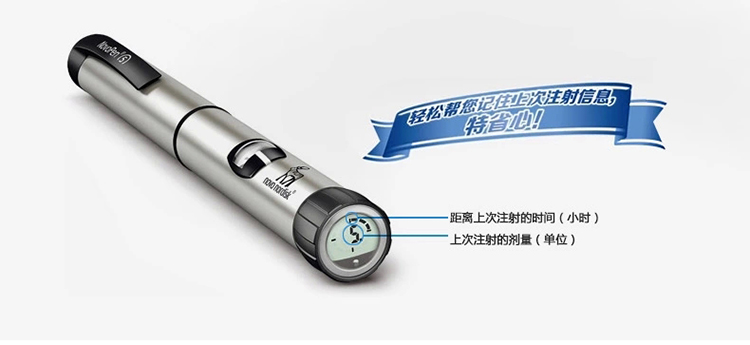
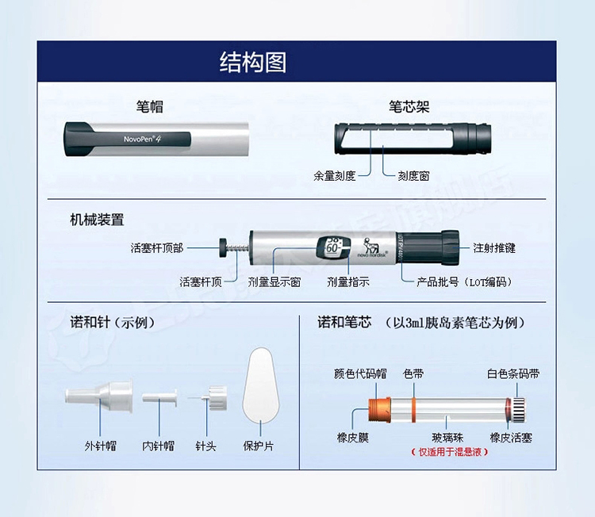
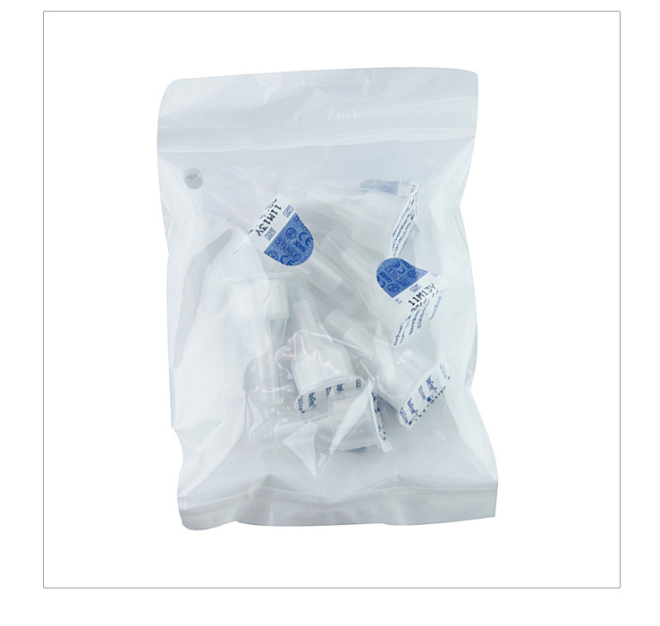

根据1971例患者入组的DAWN研究，25%以上的需要胰岛素治疗的患者对注射感到焦虑，708例患者入组的Polonsky研究显示，44%的患者对自我注射胰岛素（如设定正确的剂量）缺乏信心，因此，患者对针头的认识停留在静脉注射用针上，成为胰岛素初始治疗的严重心理障碍。
1925年，诺和诺德公司生产出世界上第一只胰岛素专用注射器。 20 世纪70年代，国外开始使用一次性塑料注射器+金属针头注射胰岛素。 国内80年代起也逐渐开始采用一次性塑料注射器代替普通1ml玻璃注射器注射胰岛素。
1985年，诺和笔研发成功，耐用型胰岛素注射系统革命性的改变了胰岛素注射方式，从根本上改善了患者对胰岛素注射的焦虑心理、依从性及提高了注射的准确性。 1988年，诺和笔2上市，1992年，诺和笔3上市，2008年，诺和诺德(中国)制药有限公司研制诺和笔4新一代胰岛素笔在中国上市。 诺和笔5是诺和笔4升级版，是一款有记忆的诺和笔，可保存上次注射的剂量单位及距离上次注射的时间。
